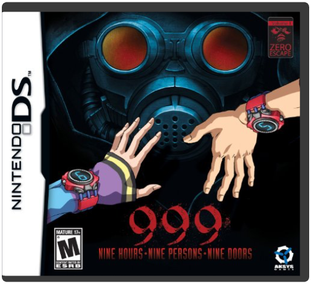
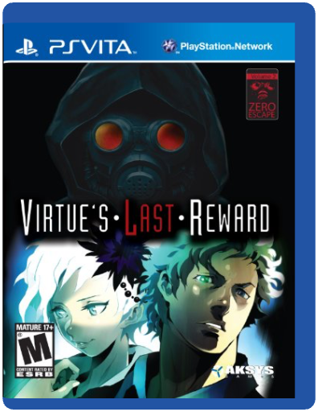
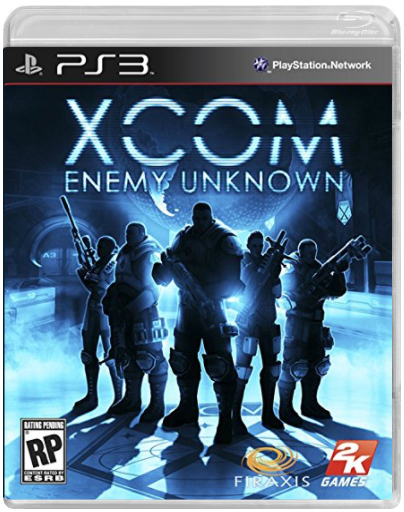

 9 Hours 9 Persons 9 DoorsAksys Games  USA VERSION. Junpei, a fairly normal college student finds himself involved in a deadly conspiracy that he couldn't have possibly imagined. He awakes aboard an old passenger ferry, dazed and confused he stumbles around the room trying to reclaim his memories. First thing he noticed was a number roughly drawn on the cabin's door... A bright red number 5. Junpei's memory then returned and he remembered what happened right before becoming unconscious! A mysterious person with a gas mask crossed his mind. He remembered the haunting words he spoke, "I'm gonna make you play the game... the 'Nonary Game'... the game of life or death". "We've decided to call 999 an 'Adventure' game," say Ben Bateman, Localization Editor, Aksys Games, "but I don't really feel that's entirely accurate. 999 is a game that simulates life, or at least it would if your life was about being trapped on a sinking ship and forced to complete a series of incomprehensible puzzles before your practically inevitable death. It is about relationships, and how they will ultimately kill you. There is also some blood, and an ax, so if you've always wanted some blood and an ax in your life, there you go. But what really brings 999 to life are the people who inhabit it. You will learn to care for them; to feel as though you are there and they are your friends, and then they will die because you made the wrong choices. Just like in real life."  Virtue's Last RewardAksys Games You thought you'd defeated the Nonary Game, but now it's back, and more deadly than ever. It'll take cunning, skill, and more than a little luck to escape alive, but do you really have a choice? IDO agents working in California report that preliminary findings indicate the exceedingly dangerous Japanese adventure game known as "Zennin Shiboudesu" has somehow crossed the Pacific. Attempts were made to contain it, but some carriers seem to have escaped the quarantine and are now at large.  XCOM Enemy Unknown2K Games XCOM Enemy Unknown will place you in control of a secret paramilitary organisation called XCOM. As the XCOM commander, you will defend against a terrifying global alien invasion by managing resources, advancing technologies, and overseeing combat strategies and individual unit tactics. |
 Made with Delicious Library
Made with Delicious Library